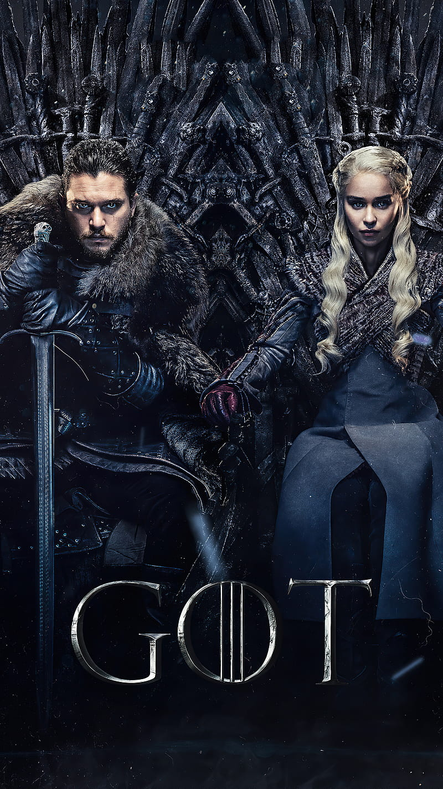

Welcome to Westeros

Welcome to my Game of Thrones fan page. Game of Thrones is a fantasy television series filled with political intrigue, powerful families, and epic battles. I enjoy this fandom because of its complex characters, unpredictable storylines, and rich world-building.
About the Fandom
One of the most interesting parts of Game of Thrones is how every house, alliance, and rivalry shapes the story. The series mixes action, strategy, loyalty, betrayal, and fantasy in a way that keeps viewers invested.
Leave a Comment
Which House Do You Belong To?
1. What do you value most?
2. How do you make decisions?
3. What motivates you?